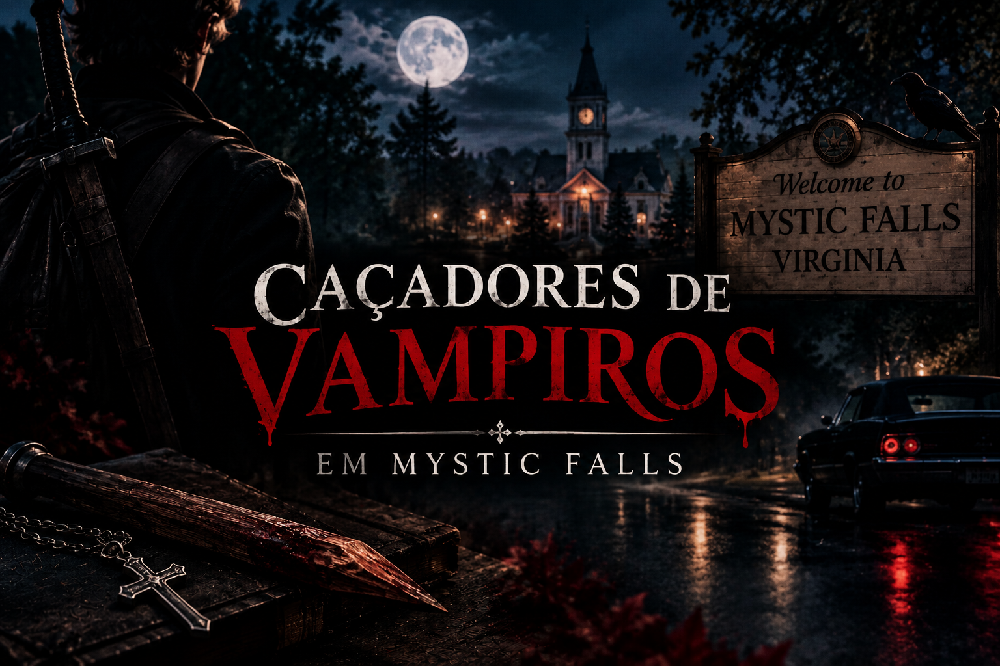

Nossa primeira Caça.
As brumas de Mystic Falls guardam perigos e lendas. Você tem a coragem de desvenda-las? Seja bem-vindo ao seu guia essencial para sobreviver as sombras.
Por: Maria Julia
Bem-vindos a Mystic Falls. Monitore as sombras, proteja seu pescoço

As brumas de Mystic Falls guardam perigos e lendas. Você tem a coragem de desvenda-las? Seja bem-vindo ao seu guia essencial para sobreviver as sombras.
Por: Maria Julia